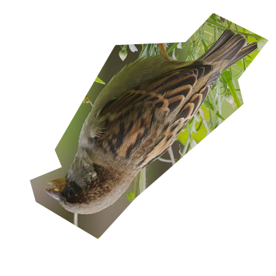
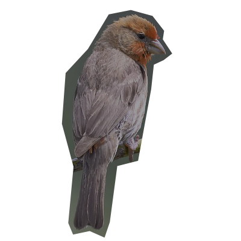

v
X
Info
Cerrar
PINZÓN
HAEMORHOUS MEXICANUS
Un pájaro común, pero difícil de ver.
Se posta principalmente al tope de árboles
muy altos, en Miguel Ángel de Quevedo,
principalmente eucaliptos, jacarandas,
y laureles de la India.
Se puede escuchar su canto, aunque
verlo no sea fácil.
